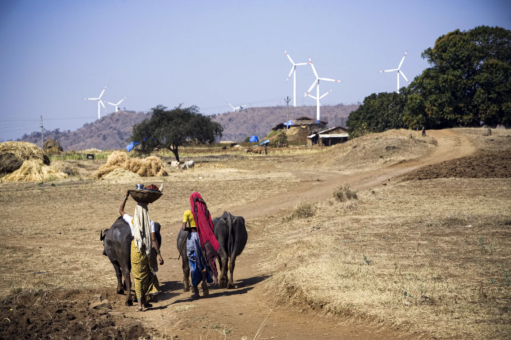

Sectors
Contributing to Carbon Emissions
Carbon Dioxide Emissions continue to rise, when instead they should be
rapidly falling. For effective reduction of emissions we should be
aware which sectors contribute the most & how we can use this analysis
to develop effective solutions and mitigation strategies.
Electricity is the
largest carbon emitting sector (30%).
Transportation is the
second highest sector for emission followed by Industries, Commercial
& Residential and Agriculture.
This breakdown depicts that a range of sectors and processes
contribute to global emissions & no single or simple solution is
viable to tackle climate change. For instance, focusing on electricity
or transport or deforestation alone is insufficient. To reach net-zero
emissions we need innovations across sectors.
A Study
Of India on Carbon Emissions
We conducted our own survey and analysed all gathered data. Our
findings, in a summarised manner were as follows:
The national capital - Delhi has the highest annual carbon footprint in
the country. In fact, Delhi's annual CO2 emission of 69.4 million tonnes
is equal to the CO2 emission of Bangalore, Hyderabad and Chennai put
together. When it comes to per capita CO2 emission, Chandigarh and
Vadodara are far ahead of the rest with 3.9 tonnes and 3.5 tonnes
respectively. The carbon footprint for a Mumbaiite was concentrated in
the range of 0.51 tonnes of carbon dioxide per year. Our analysis found
that higher income groups have a higher carbon consumption lifestyle as
compared to those from lower income groups. CO2 emissions are dominated
by the burning of fossil fuels for energy production and industrial
production of materials such as cement. Since India has the second
highest population in the world i.e 17.5% of the worlds total
population, this increases the consumption of food, energy, goods and
services thereby resulting in the further increase of CO2 emission.
Our Final
Words...
Through this website and the information it provides, we wanted to help
you understand, calculate and shrink your carbon footprints. Whether
your aim is to reduce your footprints by one tonne, or to shrink it to
one tonne, this website should be full of useful information.

The next few years will be decisive in our fight against climate change
and our success will certainly depend on our ability to reduce our
carbon footprint.
Going zero waste is a great step towards combating climate change.
Practicing the 5 R's of zero waste can help.
REFUSE:
Avoid single use plastics and paper products by saying no thank you,
opting for reusables.
REDUCE: Downsize what you purchase, opting to be more mindful of what
you really need.
REUSE: Always find a way to keep an item out of the landfill by keeping
it in great condition, repairing or upcycling it when it breaks.
ROT: Set
up a compost system for your food scraps, or find a food scrap drop off
center (like a farmers market, or community garden) near your house.
RECYCLE: Properly recycle any plastic, paper, glass or metal that comes
into your life you cannot refuse, reduce, or reuse by researching your
state's recycling laws.
Choose
responsible consumption, based on local products and sustainable
production, and start growing produce in your own urban garden.
Get
about using sustainable means of transport, such as public transport,
bicycle or on foot, and buy vehicles that are environmentally friendly.
Choose a 100 % renewable energy consumption, buy energy-saving
appliances, and control heating and air conditioning to save energy.
Be
aware and tell others about the importance of reducing the carbon
footprint.
Reduce
waste, Reuse your packaging, Recycle it and if this is not possible,
dispose of it in the appropriate container.